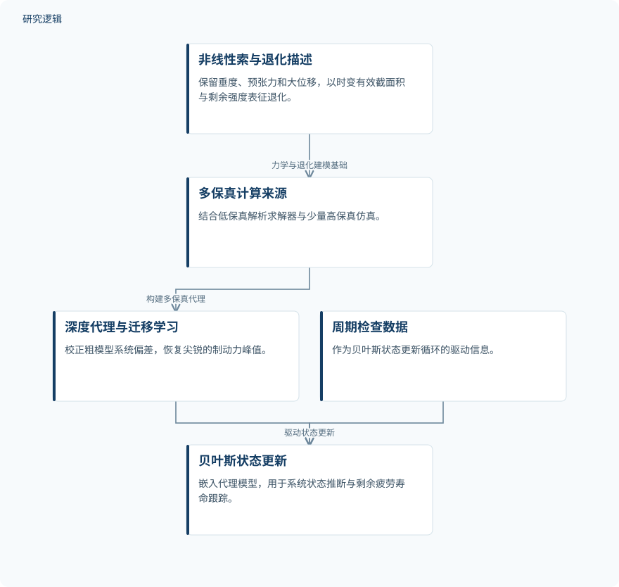

摘要解读
面向永久柔性防坠落系统状态维修的数字孪生建模与腐蚀疲劳退化多保真深度代理仿真
Digital Twin Modeling and Multi-Fidelity Deep Surrogate Simulation of Corrosion Fatigue Degradation Processes for the Condition-Based Maintenance of Permanent Flexible Fall Arrest Systems
解读更新 2026-11-10 17:01 · 依据公开摘要整理，未核验全文细节
永久性柔性防坠系统既要承受瞬间制动力，也会经历长期腐蚀疲劳。如何把这两类过程放进同一个状态评估框架？本研究以数字孪生和多保真深度代理模型探索这一问题，但其结果仍属于数值模型层面的概念验证。
文章目录
瞬时制动与长期退化，需要共同评估
这类安全关键设备的承载能力受两种耦合过程支配：毫秒尺度的瞬态制动，以及多年尺度的腐蚀疲劳退化。研究希望在统一的仿真与监测架构中描述二者，使服役状态评估依据系统的实际状态，而不只是安装时的设计参数。核心问题因此不只是“初始设计能否承载”，还包括退化后的系统如何响应制动载荷。
从非线性索模型到检查驱动的状态更新
研究采用几何非线性索模型描述柔性水平生命线，保留垂度、预张力和制动过程中的大位移；腐蚀与循环载荷则通过有效截面积、剩余强度的时变参数进入模型。这样的建模方式把瞬时力学响应与长期性能变化联系起来。
为缓解服役期内反复进行高保真有限元计算的负担，作者结合低保真解析求解器与少量高保真仿真，构建多保真深度代理模型。迁移学习用于校正粗模型的系统偏差并恢复尖锐的制动力峰值，随后将代理模型嵌入由周期检查数据驱动的贝叶斯状态更新循环。
依据摘要整理的多保真状态评估过程


仅概括摘要明确描述的建模、代理构建与状态更新关系，不是论文原图，也不表示已经完成现场验证。
下载 SVG图示关系说明
实线表示相邻阶段的信息流，虚线表示跨阶段联系或反馈。
非线性索与退化描述 → 多保真计算来源：力学与退化建模基础；多保真计算来源 → 深度代理与迁移学习：构建多保真代理；深度代理与迁移学习 → 贝叶斯状态更新：嵌入更新循环；周期检查数据 → 贝叶斯状态更新：驱动状态更新
相对高保真参考，兼顾峰值再现与计算提速
摘要报告，在准静态、动态制动和长期退化案例中，代理模型再现的峰值制动力与锚固反力相对高保真参考的误差约在3.5%以内，评估时间减少了数个数量级，并能在现实检查间隔条件下跟踪剩余疲劳寿命。这里的精度是相对高保真模型的一致性，并非相对实物测量的预测精度；寿命跟踪也不能直接等同于现场寿命预测已经得到验证。
没有实物与现场验证，适用范围仍待厘清
摘要明确说明，全部参考值均来自本文建立的高保真模型，没有物理试验或现场记录，因此作者将其定位为概念验证框架，而非已验证的工程工具。摘要未给出高保真仿真的具体数量、案例参数覆盖范围、检查数据的构造方式，以及与其他代理方法的比较细节；仅凭当前材料，无法判断这些因素对误差和泛化能力的影响，也不能据此断言论文没有开展相应分析。
阅读启发：区分代理精度与工程可信度
阅读启发：值得进一步关注的不是单独的提速幅度，而是整条推断链是否可信——高保真模型怎样描述腐蚀疲劳，迁移学习如何保留制动力峰值，检查信息又怎样约束剩余寿命估计。后续阅读可重点核对这些环节的假设与适用边界，尤其区分“代理模型逼近参考模型”与“参考模型代表真实系统”，避免把状态维修规划的候选路径理解为已经证实的运维效果。
以上为本站阅读启发与建议，不是论文已验证的结论。